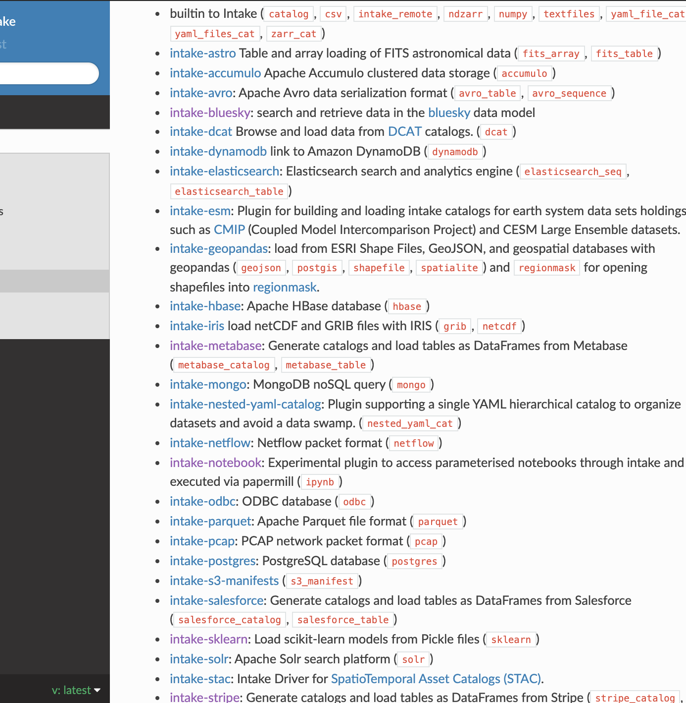

TL;DR: the Intake plugins directory has expanded recently, and no longer fits on a single page. Someone (read: me) needs to start making categories and a TOC. This bodes well for the continued growth of Intake uptake.
For those that have not come across it before, Intake is a python package for describing, loading and disseminating datasets in catalogues. Newcomers are encouraged to read the main documentation and the quickstart there to understand how Intake can "take the pain out of data access", whether for the data user, curators, developers or IT professionals.
Importantly for this discussion, Intake provides the same API for accessing catalogues and data sources regardless of the backend, and provides metadata in a consistent way. The more types of data we can access and catalogue, the richer the Intake landscape!
Although a number of "drivers" - classes specialising in loading a particular type
of data - are included in the main intake package, many more are provided in
optional extra packages. Some of these are owned by the Intake organisation, but many
are contributed by the community. A brief glimpse at https://intake.readthedocs.io/en/latest/plugin-directory.html
show the currently known list, for those drivers that have specifically asked to
be included in the list. Some of these packages contain more than one driver.
This list has dynamically grown over time, and with
the addition of a few more over the past months, the list has become too long to
easily parse, and no longer a one-pager. This can only be good news for the
Intake ecosystem!
Without further ado, here is a list of new drivers that have appeared recently, with a brief description of each. Most of these have made it onto the list below, and some are just too new for someone to have got around to including them! We include direct links here for the ones that are not yet on the official list.
papermillstreamz library
Intake is alive and kicking! Writing drivers is easy, and Intake is proving itself as being a great standardisation layer, to expose heterogeneous data collections to data practitioners.
Look out for upcoming articles on intake-streamz and improvements to streamz in general!
Look out for detailed description and example of Intakes new transformation classes!
Our friends at Brookhaven are developing a scalable, performant Intake server to replace the current prototype included in Intake.